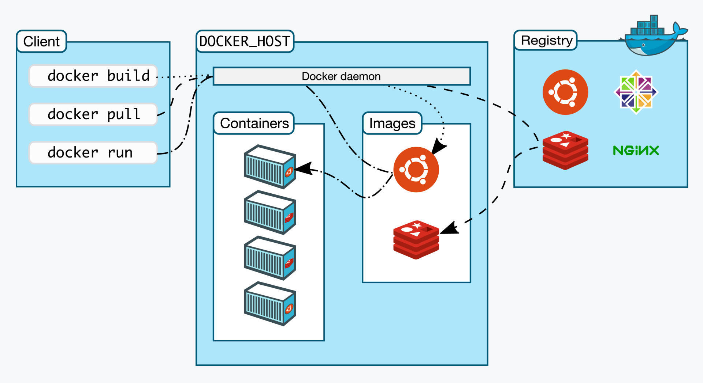
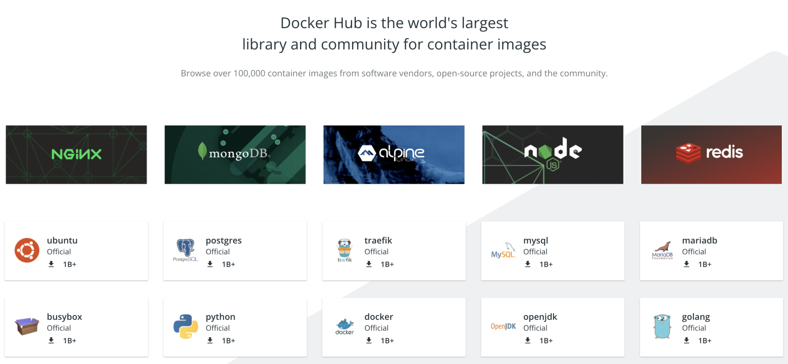
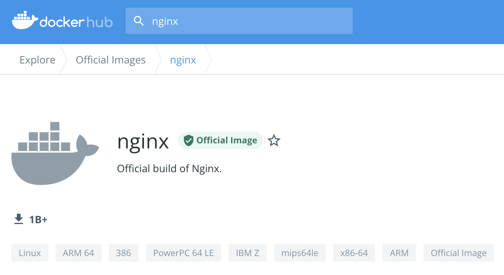
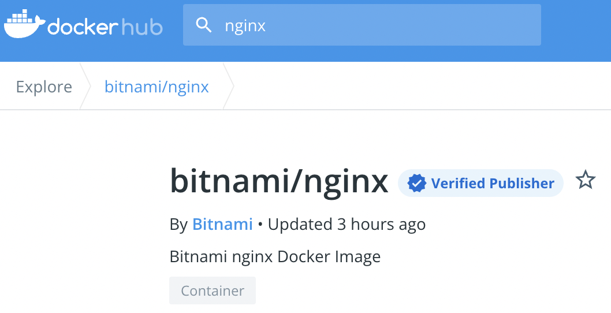
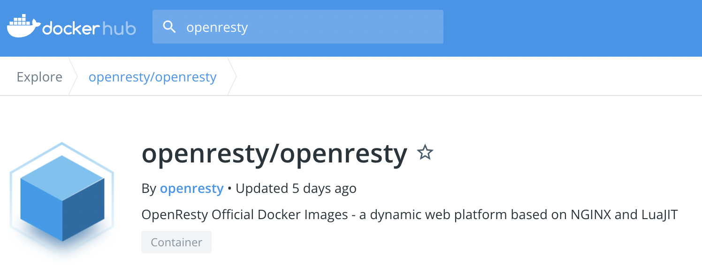
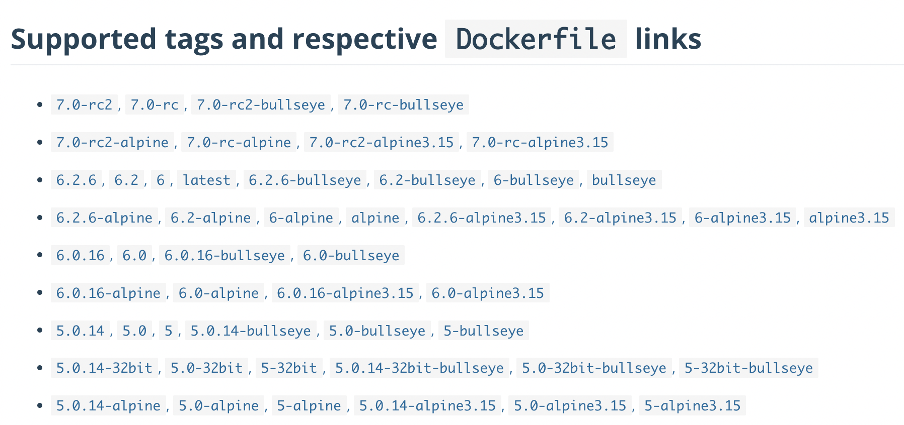
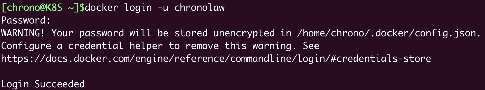
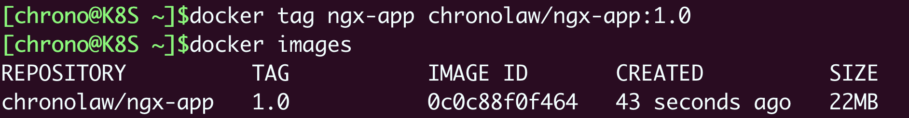
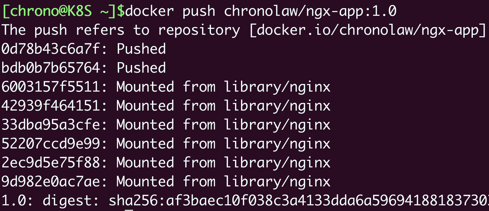
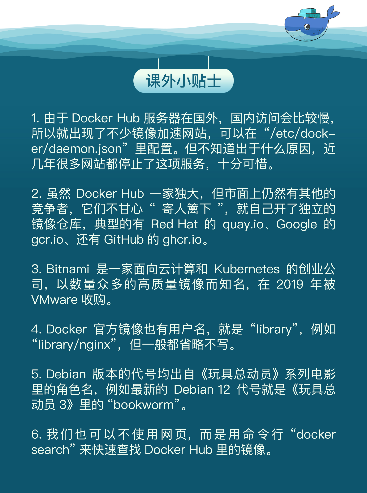

- 00 开篇词 迎难而上，做云原生时代的弄潮儿.md.html
- 00 课前准备 动手实践才是最好的学习方式.md.html
- 01 初识容器：万事开头难.md.html
- 02 被隔离的进程：一起来看看容器的本质.md.html
- 03 容器化的应用：会了这些你就是Docker高手.md.html
- 04 创建容器镜像：如何编写正确、高效的Dockerfile.md.html
- 05 镜像仓库：该怎样用好Docker Hub这个宝藏.md.html
- 06 打破次元壁：容器该如何与外界互联互通.md.html
- 07 实战演练：玩转Docker.md.html
- 08 视频：入门篇实操总结.md.html
- 09 走近云原生：如何在本机搭建小巧完备的Kubernetes环境.md.html
- 10 自动化的运维管理：探究Kubernetes工作机制的奥秘.md.html
- 11 YAML：Kubernetes世界里的通用语.md.html
- 12 Pod：如何理解这个Kubernetes里最核心的概念？.md.html
- 13 Job_CronJob：为什么不直接用Pod来处理业务？.md.html
- 14 ConfigMap_Secret：怎样配置、定制我的应用.md.html
- 15 实战演练：玩转Kubernetes（1）.md.html
- 16 视频：初级篇实操总结.md.html
- 17 更真实的云原生：实际搭建多节点的Kubernetes集群.md.html
- 18 Deployment：让应用永不宕机.md.html
- 19 Daemonset：忠实可靠的看门狗.md.html
- 20 Service：微服务架构的应对之道.md.html
- 21 Ingress：集群进出流量的总管.md.html
- 22 实战演练：玩转Kubernetes（2）.md.html
- 23 视频：中级篇实操总结.md.html
- 24 PersistentVolume：怎么解决数据持久化的难题？.md.html
- 25 PersistentVolume + NFS：怎么使用网络共享存储？.md.html
- 26 StatefulSet：怎么管理有状态的应用？.md.html
- 27 滚动更新：如何做到平滑的应用升级降级？.md.html
- 28 应用保障：如何让Pod运行得更健康？.md.html
- 29 集群管理：如何用名字空间分隔系统资源？.md.html
- 30 系统监控：如何使用Metrics Server和Prometheus？.md.html
- 31 网络通信：CNI是怎么回事？又是怎么工作的？.md.html
- 32 实战演练：玩转Kubernetes（3）.md.html
- 33 视频：高级篇实操总结.md.html
- 加餐 docker-compose：单机环境下的容器编排工具.md.html
- 加餐 谈谈Kong Ingress Controller.md.html
- 结束语 是终点，更是起点.md.html
- 捐赠
05 镜像仓库：该怎样用好Docker Hub这个宝藏
你好，我是Chrono。
上一次课里我们学习了“Dockerfile”和“docker build”的用法，知道了如何创建自己的镜像。那么镜像文件应该如何管理呢，具体来说，应该如何存储、检索、分发、共享镜像呢？不解决这些问题，我们的容器化应用还是无法顺利地实施。
今天，我就来谈一下这个话题，聊聊什么是镜像仓库，还有该怎么用好镜像仓库。
什么是镜像仓库（Registry）
之前我们已经用过 docker pull 命令拉取镜像，也说过有一个“镜像仓库”（Registry）的概念，那到底什么是镜像仓库呢？
还是来看Docker的官方架构图（它真的非常重要）：

图里右边的区域就是镜像仓库，术语叫Registry，直译就是“注册中心”，意思是所有镜像的Repository都在这里登记保管，就像是一个巨大的档案馆。
然后我们再来看左边的“docker pull”，虚线显示了它的工作流程，先到“Docker daemon”，再到Registry，只有当Registry里存有镜像才能真正把它下载到本地。
当然了，拉取镜像只是镜像仓库最基本的一个功能，它还会提供更多的功能，比如上传、查询、删除等等，是一个全面的镜像管理服务站点。
你也可以把镜像仓库类比成手机上的应用商店，里面分门别类存放了许多容器化的应用，需要什么去找一下就行了。有了它，我们使用镜像才能够免除后顾之忧。
什么是Docker Hub
不过，你有没有注意到，在使用 docker pull 获取镜像的时候，我们并没有明确地指定镜像仓库。在这种情况下，Docker就会使用一个默认的镜像仓库，也就是大名鼎鼎的“Docker Hub”（https://hub.docker.com/）。
Docker Hub是Docker公司搭建的官方Registry服务，创立于2014年6月，和Docker 1.0同时发布。它号称是世界上最大的镜像仓库，和GitHub一样，几乎成为了容器世界的基础设施。
Docker Hub里面不仅有Docker自己打包的镜像，而且还对公众免费开放，任何人都可以上传自己的作品。经过这8年的发展，Docker Hub已经不再是一个单纯的镜像仓库了，更应该说是一个丰富而繁荣的容器社区。
你可以看看下面的这张截图，里面列出的都是下载量超过10亿次（1 Billion）的最受欢迎的应用程序，比如Nginx、MongoDB、Node.js、Redis、OpenJDK等等。显然，把这些容器化的应用引入到我们自己的系统里，就像是站在了巨人的肩膀上，一开始就会有一个高水平的起点。

但和GitHub、App Store一样，面向所有人公开的Docker Hub也有一个不可避免的缺点，就是“良莠不齐”。
在Docker Hub搜索框里输入关键字，比如Nginx、MySQL，它立即就会给出几百几千个搜索结果，有点“乱花迷人眼”的感觉，这么多镜像，应该如何挑选出最适合自己的呢？下面我就来说说自己在这方面的一些经验。
如何在Docker Hub上挑选镜像
首先，你应该知道，在Docker Hub上有官方镜像、认证镜像和非官方镜像的区别。
官方镜像是指Docker公司官方提供的高质量镜像（https://github.com/docker-library/official-images），都经过了严格的漏洞扫描和安全检测，支持x86_64、arm64等多种硬件架构，还具有清晰易读的文档，一般来说是我们构建镜像的首选，也是我们编写Dockerfile的最佳范例。
官方镜像目前有大约100多个，基本上囊括了现在的各种流行技术，下面就是官方的Nginx镜像网页截图：

你会看到，官方镜像会有一个特殊的“Official image”的标记，这就表示这个镜像经过了Docker公司的认证，有专门的团队负责审核、发布和更新，质量上绝对可以放心。
第二类是认证镜像，标记是“Verified publisher”，也就是认证发行商，比如Bitnami、Rancher、Ubuntu等。它们都是颇具规模的大公司，具有不逊于Docker公司的实力，所以就在Docker Hub上开了个认证账号，发布自己打包的镜像，有点类似我们微博上的“大V”。

这些镜像有公司背书，当然也很值得信赖，不过它们难免会带上一些各自公司的“烙印”，比如Bitnami的镜像就统一以“minideb”为基础，灵活性上比Docker官方镜像略差，有的时候也许会不符合我们的需求。
除了官方镜像和认证镜像，剩下的就都属于非官方镜像了，不过这里面也可以分出两类。
第一类是“半官方”镜像。因为成为“Verified publisher”是要给Docker公司交钱的，而很多公司不想花这笔“冤枉钱”，所以只在Docker Hub上开了公司账号，但并不加入认证。
这里我以OpenResty为例，看一下它的Docker Hub页面，可以看到显示的是OpenResty官方发布，但并没有经过Docker正式认证，所以难免就会存在一些风险，有被“冒名顶替”的可能，需要我们在使用的时候留心鉴别一下。不过一般来说，这种“半官方”镜像也是比较可靠的。

第二类就是纯粹的“民间”镜像了，通常是个人上传到Docker Hub的，因为条件所限，测试不完全甚至没有测试，质量上难以得到保证，下载的时候需要小心谨慎。
除了查看镜像是否为官方认证，我们还应该再结合其他的条件来判断镜像质量是否足够好。做法和GitHub差不多，就是看它的下载量、星数、还有更新历史，简单来说就是“好评”数量。
一般来说下载量是最重要的参考依据，好的镜像下载量通常都在百万级别（超过1M），而有的镜像虽然也是官方认证，但缺乏维护，更新不及时，用的人很少，星数、下载数都寥寥无几，那么还是应该选择下载量最多的镜像，通俗来说就是“随大流”。
下面的这张截图就是OpenResty在Docker Hub上的搜索结果。可以看到，有两个认证发行商的镜像（Bitnami、IBM），但下载量都很少，还有一个“民间”镜像下载量虽然超过了1M，但更新时间是3年前，所以毫无疑问，我们应该选择排在第三位，但下载量超过10M、有360多个星的“半官方”镜像。

看了这么多Docker Hub上的镜像，你一定注意到了，应用都是一样的名字，比如都是Nginx、Redis、OpenResty，该怎么区分不同作者打包出的镜像呢？
如果你熟悉GitHub，就会发现Docker Hub也使用了同样的规则，就是“用户名/应用名”的形式，比如 bitnami/nginx、ubuntu/nginx、rancher/nginx 等等。
所以，我们在使用 docker pull 下载这些非官方镜像的时候，就必须把用户名也带上，否则默认就会使用官方镜像：
docker pull bitnami/nginx
docker pull ubuntu/nginx
Docker Hub上镜像命名的规则是什么
确定了要使用的镜像还不够，因为镜像还会有许多不同的版本，也就是“标签”（tag）。
直接使用默认的“latest”虽然简单方便，但在生产环境里是一种非常不负责任的做法，会导致版本不可控。所以我们还需要理解Docker Hub上标签命名的含义，才能够挑选出最适合我们自己的镜像版本。
下面我就拿官方的Redis镜像作为例子，解释一下这些标签都是什么意思。

通常来说，镜像标签的格式是应用的版本号加上操作系统。
版本号你应该比较了解吧，基本上都是主版本号+次版本号+补丁号的形式，有的还会在正式发布前出rc版（候选版本，release candidate）。而操作系统的情况略微复杂一些，因为各个Linux发行版的命名方式“花样”太多了。
Alpine、CentOS的命名比较简单明了，就是数字的版本号，像这里的 alpine3.15 ，而Ubuntu、Debian则采用了代号的形式。比如Ubuntu 18.04是 bionic，Ubuntu 20.04是 focal，Debian 9是 stretch，Debian 10是 buster，Debian 11是 bullseye。
另外，有的标签还会加上 slim、fat，来进一步表示这个镜像的内容是经过精简的，还是包含了较多的辅助工具。通常 slim 镜像会比较小，运行效率高，而 fat 镜像会比较大，适合用来开发调试。
下面我就列出几个标签的例子来说明一下。
- nginx:1.21.6-alpine，表示版本号是1.21.6，基础镜像是最新的Alpine。
- redis:7.0-rc-bullseye，表示版本号是7.0候选版，基础镜像是Debian 11。
- node:17-buster-slim，表示版本号是17，基础镜像是精简的Debian 10。
该怎么上传自己的镜像
现在，我想你应该对如何在Docker Hub上选择镜像有了比较全面的了解，那么接下来的问题就是，我们自己用Dockerfile创建的镜像该如何上传到Docker Hub上呢？
这件事其实一点也不难，只需要4个步骤就能完成。
第一步，你需要在Docker Hub上注册一个用户，这个就不必再多说了。
第二步，你需要在本机上使用 docker login 命令，用刚才注册的用户名和密码认证身份登录，像这里就用了我的用户名“chronolaw”：-

第三步很关键，需要使用 docker tag 命令，给镜像改成带用户名的完整名字，表示镜像是属于这个用户的。或者简单一点，直接用 docker build -t 在创建镜像的时候就起好名字。
这里我就用上次课里的镜像“ngx-app”作为例子，给它改名成 chronolaw/ngx-app:1.0：
docker tag ngx-app chronolaw/ngx-app:1.0

第四步，用 docker push 把这个镜像推上去，我们的镜像发布工作就大功告成了：
docker push chronolaw/ngx-app:1.0

你还可以登录Docker Hub网站验证一下镜像发布的效果，可以看到它会自动为我们生成一个页面模板，里面还可以进一步丰富完善，比如添加描述信息、使用说明等等：-

现在你就可以把这个镜像的名字（用户名/应用名:标签）告诉你的同事，让他去用 docker pull 下载部署了。
离线环境该怎么办
使用Docker Hub来管理镜像的确是非常方便，不过有一种场景下它却是无法发挥作用，那就是企业内网的离线环境，连不上外网，自然也就不能使用 docker push、docker pull 来推送拉取镜像了。
那这种情况有没有解决办法呢？
方法当然有，而且有很多。最佳的方法就是在内网环境里仿造Docker Hub，创建一个自己的私有Registry服务，由它来管理我们的镜像，就像我们自己搭建GitLab做版本管理一样。
自建Registry已经有很多成熟的解决方案，比如Docker Registry，还有CNCF Harbor，不过使用它们还需要一些目前没有讲到的知识，步骤也有点繁琐，所以我会在后续的课程里再介绍。
下面我讲讲存储、分发镜像的一种“笨”办法，虽然比较“原始”，但简单易行，可以作为临时的应急手段。
Docker提供了 save 和 load 这两个镜像归档命令，可以把镜像导出成压缩包，或者从压缩包导入Docker，而压缩包是非常容易保管和传输的，可以联机拷贝，FTP共享，甚至存在U盘上随身携带。
需要注意的是，这两个命令默认使用标准流作为输入输出（为了方便Linux管道操作），所以一般会用 -o、-i 参数来使用文件的形式，例如：
docker save ngx-app:latest -o ngx.tar
docker load -i ngx.tar
小结
好了，今天我们一起学习了镜像仓库，了解了Docker Hub的使用方法，整理一下要点方便你加深理解：
- 镜像仓库（Registry）是一个提供综合镜像服务的网站，最基本的功能是上传和下载。
- Docker Hub是目前最大的镜像仓库，拥有许多高质量的镜像。上面的镜像非常多，选择的标准有官方认证、下载量、星数等，需要综合评估。
- 镜像也有很多版本，应该根据版本号和操作系统仔细确认合适的标签。
- 在Docker Hub注册之后就可以上传自己的镜像，用
docker tag打上标签再用docker push推送。 - 离线环境可以自己搭建私有镜像仓库，或者使用
docker save把镜像存成压缩包，再用docker load从压缩包恢复成镜像。
课下作业
最后是课下作业时间，给你留两个思考题：
- 很多应用（如Nginx、Redis、Go）都已经有了Docker官方镜像，为什么其他公司（Bitnami、Rancher）还要重复劳动，发布自己打包的镜像呢？
- 你能否对比一下GitHub和Docker Hub，说说它们两个在功能、服务对象、影响范围等方面的异同点呢？
记得在留言区留言参与讨论哦，如果我看到，也会第一时间给你回复。我们下节课再见。

© 2019 - 2023 Liangliang Lee. Powered by gin and hexo-theme-book.